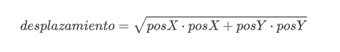

Ejemplos
Ejemplo de la unidad 02
Clase Pajaro
Vamos a ilustrar mediante un ejemplo la utilización de objetos y métodos, así como el uso de parámetros y el operador this. Aunque la creación de clases la veremos en las siguientes unidades, en este ejercicio creamos una pequeña clase para que podamos instanciar el objeto con el que vamos a trabajar.
Las clases se suelen representar como un rectángulo, y dentro de él se sitúan los atributos y los métodos de dicha clase.
En la imagen anterior, la clase Pajaro está compuesta por tres atributos, uno de ellos el nombre y otros dos que indican la posición del ave, posX y posY. Tiene dos métodos constructores y un método volar(). Como sabemos, los métodos constructores reciben el mismo nombre de la clase, y puede haber varios para una misma clase, dentro de ella se diferencian unos de otros por los parámetros que utilizan.
ENUNCIADO
Dada una clase principal llamada Pajaro, se definen los atributos y métodos que aparecen en la imagen anterior. Los métodos realizan las siguientes acciones:
-
Pajaro(). Constructor por defecto. En este caso, el constructor por defecto no contiene ninguna instrucción, ya que Java inicializa de forma automática las variables miembro, si no le damos ningún valor. -
Pajaro(String nombre, int posX, int posY). Constructor que recibe como argumentos una cadena de texto y dos enteros para inicializar el valor de los atributos. -
volar(int posX, int posY). Método que recibe como argumentos dos enteros:posXyposY, y devuelve un valor de tipodoublecomo resultado, usando la palabra clavereturn. El valor devuelto es el resultado de aplicar un desplazamiento de acuerdo con la siguiente fórmula:

Diseña un programa que utilice la clase Pajaro, crea una instancia de dicha clase y ejecute sus métodos.
SOLUCIÓN
Lo primero que debemos hacer es crear la clase Pajaro, con sus métodos y atributos. De acuerdo con los datos que tenemos, el código de la clase sería el siguiente:
Debemos tener en cuenta que se trata de una clase principal, lo cual quiere decir que debe contener un método main() dentro de ella. En el método main() vamos a situar el código de nuestro programa. El ejercicio dice que tenemos que crear una instancia de la clase y ejecutar sus métodos, entre los que están el constructor y el método volar().
También es conveniente imprimir el resultado de ejecutar el método volar(). Por tanto, lo que haría el programa sería:
-
Crear un objeto de la clase e inicializarlo.
-
Invocar al método volar.
-
Imprimir por pantalla la distancia recorrida.
Para inicializar el objeto utilizaremos el constructor con parámetros, después ejecutaremos el método volar() del objeto creado y finalmente imprimiremos el valor que nos devuelve el método.
Luego crearemos otro pajaro2 usando el constructor por defecto (sin parámetros). Le asignaremos el nombre y la posición manualmente, y calcularemos su desplazamiento llamando al método, pero usando los atributos del objeto (pajaro2.posX y pajaro2.posY) en lugar de constantes. El código del método main() quedaría como sigue:
Si ejecutamos nuestro programa el resultado sería el siguiente: